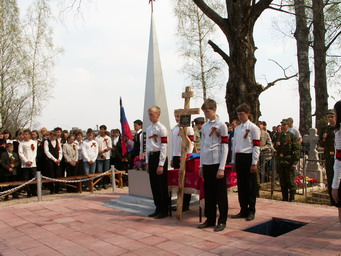
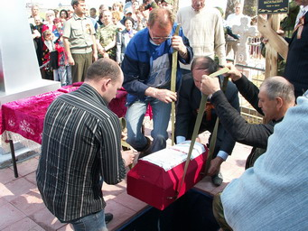
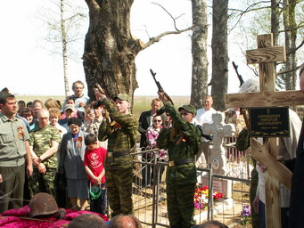
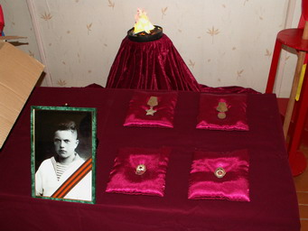
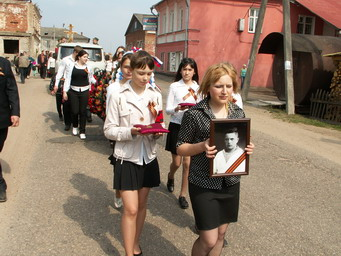

июнь 2009 года
Без срока давности…
Мой папа, Архипов Николай Михайлович, был призван на фронт в первые дни войны. Было мне в ту пору всего 5 месяцев (брату Николаю – 3,5 года). Поэтому мои воспоминания о первых годах войны - с маминых слов о фашистских налетах, о сиренах воздушной тревоги, о том, как наши матери с детьми на руках бежали в укрытие, а фашистский пулеметчик с борта самолета расстреливал детей и женщин.
А вот папины немногочисленные письма треугольники с фронта я помню до сих пор. Они были написаны химическим карандашом на одной страничке. Я их читала, сидя на полу, разложив вокруг себя, когда мама была на работе, а брат в школе. Мне тогда было 5 лет. Каждое письмо он заканчивал словами: «Береги детей. Особенно Люсеньку, она маленькая». Брата, вернувшегося из школы, я подразнивала: «Папа меня больше любит. Ты – Коля, а я Люсенька», за что получала по затылку.
Последнее письмо было написано другим почерком. Начиналось словами «Здравствуй, дорогая жена Наташа и дети Коля и Люсенька. Ранен. Нахожусь в госпитале г. Кострома. Голова ничего не соображает, будет полегче, напишу сам… », и датировано оно 15.01.42г.
Спустя три месяца мама получила похоронку: «Ваш муж Архипов Н.М. в бою за социалистическую Родину, верный воинской присяге, проявив геройство и мужество, был ранен и умер от ран 15 января 1942г. Похоронен на братском кладбище г. Кострома». А мы с братом продолжали верить, что папа жив. Как мы ждали отца! Я днями сидела у окна и смотрела в сторону дороги, ведущей к остановке. Но, увы! Чуда не могло произойти: официальная похоронка была спрятана мамой подальше от папиных писем, а стало быть, и от наших с Колей глаз. И мама ждала, тоже надеясь на ошибку, на чудо.
Уже нет мамы. Нет брата Николая, а давно пожелтевшее скорбное извещение храню я. Это напоминает мне, моим детям и внукам о войне.
А в январе 2008 года, к 66-й годовщине гибели отца, на свой запрос я получила из Санкт-Петербурга, из военно-медицинского архива, справку, из которой узнала о папиных ранениях, о том, как его доставили в госпиталь г. Костромы и о том, что он был стрелком 22 батальона 92/09 дивизии. Я сразу обратилась в военный архив г. Подольска с просьбой сообщить мне, в какую армию и какой фронт входила эта дивизия. Мне очень хочется знать, где 2 января 1942 года принял папа бой, который стал в его жизни последним, чтобы со своими детьми и внуками пройти фронтовой дорогой нашего отца и деда…
Людмила Алексеева, по материалам газеты «Новоторжский вестник».
От редакции.
Полученный из Центрального архива МО РФ ответ не пролил свет на вопрос Людмилы Алексеевны о последнем месте службы её отца. Изучив имеющиеся документы, сотрудники Фонда «Жить и Помнить» сообщили дочери солдата, что красноармеец Архипов Н.М. воевал в составе 22 стрелкового полка 92 стрелковой дивизии, 4 Отдельная Армия (с 18.12.1941 г. – в составе вновь созданного Волховского фронта). В период со 2-4 января 1942 г. все три полка 92 стрелковой дивизии вели наступательные бои в районе Лезно - Водосье, Чудовский район Новгородской области. В адрес Людмилы Алексеевны мы отослали компакт-диск с очерком о боевом пути 92 стрелковой дивизии.

ПРОЩАНИЕ В ТРЫЩИХЕ
В Кимрском районе в деревне Трыщиха Горицкого сельского поселения прошла торжественная церемония воинского захоронения погибшего в годы Великой Отечественной войны сержанта Николая Васильевича Синюшкина.
До сентября минувшего года командир расчета станкового пулемета Николай Синюшкин числился пропавшим без вести. Его останки были обнаружены недалеко от шоссе Выборг-Светогорск, в 16-ти километрах от Выборга, членами выборгского отряда «Поиск» Алексеем Тузовым и Алексеем Семеновым во время поисковых работ на местах боевых действий.
Имя Николая Васильевича Синюшкина, уроженца деревни Трыщиха Горицкого района Калининской области, было установлено по боевым наградам. Погибший в 24 года красноармеец был награжден орденом Славы 3-й степени, медалью «За оборону Ленинграда» и нагрудным знаком «Гвардия».
Тверское отделение фонда "Жить и помнить" связалось с администрацией Кимрского района, и началась работа по возвращению останков героя на родину. Оказалось, что еще в далеком 1946 году сестры сержанта пытались найти своего брата. Но безуспешно. До сегодняшнего дня смог дожить только муж одной из сестер - Иван Васильевич Астафьев.
В сквере у Выборгского военкомата прошла торжественная церемония передачи останков красноармейца Николая Синюшкина представителям Кимрского района Тверской области. Ирина Еремеева, заведующая отделом молодежной политики администрации Кимрского района тепло поблагодарила поисковиков от имени всех кимровчан. Она назвала работу поисковиков подвигом в мирные дни.


В Кимрском районе останки солдата перезахоронили 6 мая, в день, когда православные верующие почитают святого Георгия Победоносца, который считается защитником всех воинов.
По старинной традиции за гробом жители села Горицы, где и начался траурный митинг, шли пешком, по дороге вспоминали, размышляли о годах далекой войны. Николай Васильевич Синюшкин теперь покоится на горицком сельском кладбище. Проститься с ним пришли селяне, родственники, представители областной администрации, первые лица района.
Краеведческому музею Горицкой сельской школы переданы личные вещи и все награды Николая Синюшкина: орден Славы, медаль "За оборону Ленинграда", два нагрудных знака. Когда внучатый племянник Николая Васильевича – Игорь Нестеров - увидел эти реликвии в музее, он не скрывал своих чувств. В ближайшее время он планирует внимательно изучить все документы и собрать информацию о подвиге Николая Васильевича.
ПО ЗОВУ СЕРДЦА И ДОЛГУ ПАМЯТИ
Очень часто логическим завершением работы Фонда «Жить и Помнить» по установлению фронтовых судеб наших земляков, не вернувшихся с фронтов Великой Отечественной, становятся поездки их родственников на могилы своих близких. Сегодня мы расскажем о трех таких поездках.
* * *
Почти десять месяцев с нашей помощью житель города Твери Смирнов Владимир Павлович готовился совершить поездку на могилу своего брата Смирнова Михаила Павловича, погибшего 17 июня 1944 года в лагере военнопленных VI А Хемер, что располагался южнее г. Дортмунд, Земля Северной Рейн-Вестфалии, ФРГ. И вот с 21 по 24 апреля этого года поездка состоялась.
Владимира Павловича встретил на вокзале г. Изерлон главный архивариус г. Хемер г-н Томас Эберхард, который вместе с переводчицей сопровождал его в течение всего времени посещения. Вместе они посетили городской архив, музей лагеря, побывали у памятника военнопленным и на кладбище Дулох, где похоронен красноармеец Смирнов М.П. «Я сделал то, что должен был сделать любой ценой – поклониться праху своего старшего брата-солдата, - говорит Владимир Павлович, – теперь на его могиле есть щепотка Тверской земли, а на могилу наших родителей я высыпал немного земли, взятой на кладбище».
Владимир Павлович рассказал, что на месте лагеря военнопленных полным ходом идет строительство мемориального комплекса шталага VI А. В Германии он встретил очень радушный прием. Все, с кем ему приходилось общаться, очень внимательно относились к любым его вопросам и просьбам. В музее лагеря попросили сделать запись о визите и подарили брошюру на русском языке «Шталаг VI А. Лагерь военнопленных 1939-1945», которая в России не издавалась.
Все услуги по его встрече, сопровождению, перевозке были оказаны немецкой стороной безвозмездно.
И еще Владимир Павлович отметил ухоженность кладбища и образцовый (он человек военный) порядок.
* * *
При содействии Управления по увековечению памяти погибших защитников Отечества и жертв войн Республики Беларусь в конце 2008 г. нашему Фонду удалось установить место захоронения командира танка 8 запасного танкового полка УРВО лейтенанта Лебедева Ивана Андреевича, уроженца Селижаровского р-на Калининской области. Он погиб в бою 1 марта 1944 г. и похоронен на воинском кладбище в дер. Быново Чаусского р-на Могилевской области.
В дни празднования 64-й годовщины Победы могилу своего брата впервые смогла посетить его сестра жительница г. Твери Елизарова Антонина Ивановна, племянники и их семьи. Всего в поездку отправились 12 человек. По согласованию с Управлением по увековечению памяти и Чаусским райисполкомом тверитян встречала и сопровождала главный специалист по идеологической работе райисполкома Денисевич А.Ф.